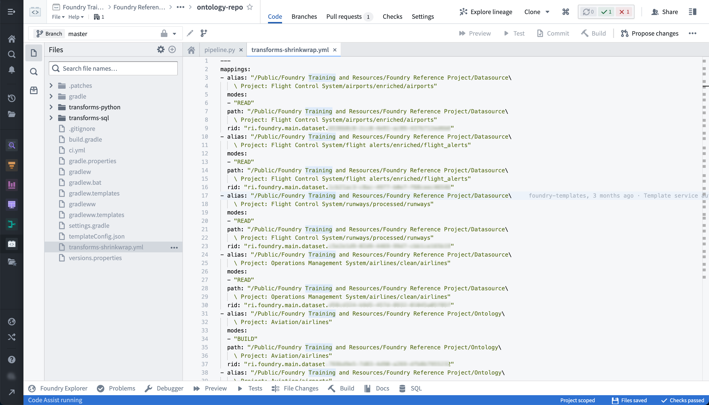

The following are some frequently asked questions about builds and checks.
For general information, view our builds and health checks documentation.
If you are having trouble debugging build errors, here are a few steps to consider:
Has the build ever succeeded? If so, have you made changes to the logic generating the dataset? Try rolling those changes back; if the build succeeds, you can likely isolate the problem to the new logic. You can also select Logs in the Datasets pane of the Builds application to review build history.
Has the underlying data recently changed? You might see this manifest in a few ways: * If the scale of the data has increased dramatically, you might see reduced performance or build failures due to compute resource concerns. * Has the schema of the underlying data changed at all? This can often cause build failures when there is logic that depends on a specific schema. To check, select Compare in Build's Datasets pane to compare differentials with previous transactions. * Has the logic for any datasets upstream of your failing dataset changed? This might lead to downstream effects of increased data scale or altered schema.
Error messages in Foundry can be long and sometimes difficult to understand. If you run into an error message that is hard to action on, try the steps below.
Often, the most helpful piece of an error trace is preceded by a key phrase. Look for some of the below phrases in your error message to find potentially valuable guidance for your troubleshooting. Note that the important parts of the message will often appear towards the bottom:
* What went wrong:
* Caused by:
* Py4JJavaError
* UserCodeError
If your error references an ErrorInstanceID with little other context, escalate the issue to Palantir Support. ErrorInstanceIDs are shown also for a user's logic errors, so be sure to first check whether this may be the cause of your issue.
When contacting Support, always include the following: * The full error message you are given * Any troubleshooting steps you have already taken * The exact time (date, time, timezone) you experienced the error
Your build is stuck on "Waiting for resources" for longer than typical and not running. This may be caused by increased activity on the platform at the time you are running your builds. The many builds being run at this time may be using up the available resources on the platform, causing your builds to be queued until other builds finish and free resources up. This behavior is a byproduct of the Spark execution model discussed on Spark transforms.
To troubleshoot, perform the following steps:
Try running your build at times when the platform is less active and see if that helps improve performance. This will help avoid your build getting queued behind other jobs.
If you are scheduling jobs, avoid running jobs at common times such as on the hour or at midnight.
--
The performance of a build worsening over time can be caused by one or more of the following: 1) a change in the logic of the transform, 2) a change in input data scale, or, 3) increased computational load on the cluster at the time of the build.
To troubleshoot, perform the following steps:
Joins that include a large left table with many entries per key and the smaller right table with few entries per key are perfect candidates for a salted join, which evenly distributes data across partitions.
To troubleshoot, perform the following steps:
EXPLODE function. EXPLODE is a cross-product: SELECT 'a' AS test, EXPLODE(ARRAY(1,2,3,4,5)) AS dummy2 test | test2
----------------
a | 1
a | 2
a | 3
a | 4
a | 5
SELECT
left.*, right.*
FROM
`/foo/bar/baz` AS left
JOIN
`/foo2/bar2/baz2` AS right
ON
left.something = right.something
something column and aggregating row count, then joining the left and right table on something and multiplying the aggregate columns. This will output a row count per key of something which is ideally evenly distributed, but when skewed indicates the need for a salted join.SELECT
left.*, right.*
FROM
(SELECT *, FLOOR(RAND() * 8) AS salt FROM `/foo/bar/baz`) AS left
JOIN
(SELECT *, EXPLODE(ARRAY(0,1,2,3,4,5,6,7)) AS salt FROM `/foo2/bar2/baz2`) AS right
ON
left.something = right.something AND left.salt = right.salt
explode factor at least X.A similar approach is to look at the row count per executor as your unsalted job is running.
Be aware of the following:
CEIL(RAND() * N) gives you integers between 1 and N. FLOOR(RAND() * N) gives you numbers between 0 and N â 1. Make sure you explode the correct set of numbers in your salted join.
Overhead from salting
Each repository contains a âshrinkwrapâ file that defines the mapping between each path referenced, the unique ID for the dataset referenced by that path, and the current path for that dataset. This is helpful when a dataset is moved between folders, for instance. The shrinkwrap file in the repository generating that dataset will update; when the build is next run, the dataset is built in the correct location. You might see shrinkwrap errors for a few reasons, such as dataset deletions, renames, or relocations.
To troubleshoot, review the following considerations and associated actions:
To find the shrinkwrap file for a given repo:
Select the gear icon near the top left of the screen.
transforms-shrinkwrap.yml file should show up as below:
Check if any datasets referenced in the repository were moved to the trash and restore them.
While you were iterating on your branch, a change may have been merged into master which added a file to the repository and updated the shrinkwrap file. To resolve this, perform the following:
transforms-shrinkwrap.yml file.To run a build, the user who triggers it must have the required permissions. Specifically, the user must be an Editor on the output dataset since running a build is effectively editing the output file.
An easy way to tell what permissions you have on a given dataset is by pulling up the dataset in Data Lineage, enabling the Permissions filter, and selecting Resource Permissions to color the nodes.
This error happens when a dataset failed to build because the schedule that was building it was canceled due to an upstream dataset failing to build.
To troubleshoot, perform the following steps:
The dataset you are trying to build believes it is controlled by another repository. You can see which repository a dataset is controlled by in the Details tab of the dataset preview page, in the sourceProvenance block of the Job spec section. This happens when multiple repositories are creating the same output dataset.
To troubleshoot, perform the following steps:
Checks can fail on timeout for a variety of reasons, but there are a few common steps you can take that will often unblock you:
ci.yml add the line ârefresh-dependencies.